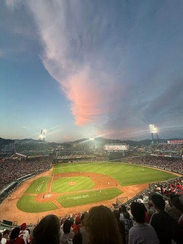

 サイト公開日：2026年6月25日 サイト更新履歴 2026年7月21日: サブページにサイドメニューおよび試合成績の表を追加しました。 2026年6月25日: サイトを公開しました。 カープその日のスタメンと成績 カープその日のスタメンと成績サイトへようこそ このサイトは、広島東洋カープの試合前に「今日のスタメンは誰か」「その選手は過去にどのような成績を残しているのか」を、一つの画面ですぐに確認できる実用的な情報サイトを目指しています。 1.試合結果と成績 その試合の1軍選手の個人成績と試合結果を掲載します。更新スケジュールは、試合後1〜2日後を予定しています。 2.試合展開の振り返り どのように得点したのか、どのカウントで打ったのかなど詳細な試合展開を表示します。試合後1〜2日後に更新します。 3.過去の同一カード戦績一覧 対戦相手との今シーズン過去の対戦成績（勝敗、得失点、平均安打数など）をまとめて表示します。更新は、試合後1〜2日後です。